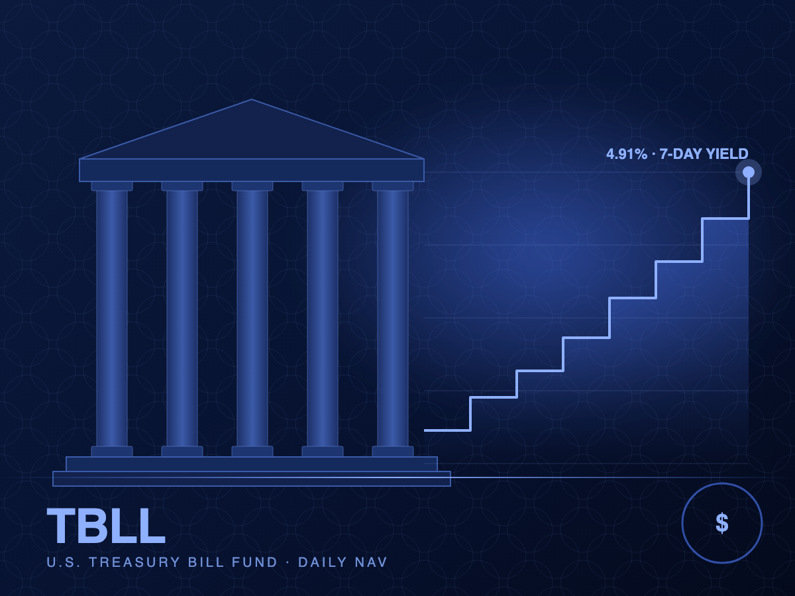

Portfolio
Weekly holdings: WAM shortened to 34 days ahead of FOMC
The manager has let longer bills roll off to retain flexibility around the September rate decision.
Read more →TBLL is a tokenized share of a Delaware fund holding short-dated U.S. Treasury bills and overnight repo. Yield accrues daily into the token price, with same-day subscriptions and T+1 redemptions.

TBLL brings the cash-management profile of a government money market vehicle to the platform, with daily accrual, transparent holdings and no lock-up.
Meridian Treasury Bill Fund (TBLL) invests exclusively in U.S. Treasury bills with 90 days or less to maturity and overnight repurchase agreements collateralised by Treasuries. The fund is structured as a Delaware series LLC, and each TBLL token represents one unit of the series.
Yield is reflected in a rising net asset value rather than distributions, so holders benefit from compounding without needing to reinvest. NAV is struck daily at 4:00 pm ET by the fund administrator and published to the platform.
Holdings are published weekly with CUSIP-level detail. The portfolio is held in segregated custody at a U.S. bank custodian and is never lent or used as collateral for any purpose other than settlement.
No commercial paper, no bank deposits, no corporate credit. Treasuries and Treasury-collateralised repo exclusively.
Interest income accrues into the token price every business day. No coupon dates, no reinvestment drag.
Series assets are legally segregated from the manager and from every other series under the LLC.
Holdings and characteristics of the fund as of the most recent weekly disclosure.
| Asset class | U.S. Treasury bills; Treasury-backed overnight repo |
| Fund type | Delaware series LLC (Series TB-1) |
| Portfolio size | $38.2 million |
| Number of holdings | 11 bills; 2 repo counterparties |
| Weighted average maturity | 34 days |
| Maximum single maturity | 90 days |
| Credit quality | 100% U.S. government |
| Custodian | Northern Meridian Bank, N.A. |
| Administrator | Apex Fund Services (US) |
| Auditor | Deloitte & Touche LLP |
Securities are held in a segregated custody account at Northern Meridian Bank, N.A., titled in the name of Series TB-1. The manager has no ability to withdraw assets other than to settle trades and pay disclosed fees.
Repo transactions are conducted under standard MRA documentation with daily margining; collateral is limited to U.S. Treasuries and is held at the custodian, not the counterparty.
TBLL NAV rises with accrued interest. The series below is illustrative of a short-bill portfolio at prevailing rates.
Summary of the continuous offering of Series TB-1 units. The Private Placement Memorandum governs.
| Token | TBLL — Meridian Treasury Bill Fund, Series TB-1 |
| Underlying | One unit of Series TB-1; pro-rata interest in the portfolio |
| Tokens offered | Up to 50,000,000 (continuous) |
| Subscription price | Daily NAV (4:00 pm ET) |
| Minimum subscription | $1,000 initial; $100 thereafter |
| Redemption | Daily at NAV; settled T+1 in USD or USDC |
| Management fee | 0.20% p.a., accrued daily |
| Eligible investors | Verified investors; U.S. persons must be accredited |
| Lock-up | None |
| Governing law | Delaware, USA |
Subscriptions at daily NAV. No subscription or platform fee on TBLL.
Initial $5M seeded by the manager and anchor investors.
Deloitte issued an unqualified opinion on the March–April stub period.
Weekly holdings disclosure expanded to CUSIP level.
Move from daily to hourly indicative NAV for platform pricing.
Planned acceptance of TBLL as margin collateral on the platform.
All offering documents are available to prospective investors. Click any document for a summary.
Recent coverage and issuer announcements relevant to TBLL holders.
The manager has let longer bills roll off to retain flexibility around the September rate decision.
Read more →Treasury bill yields have been range-bound near 4.9% as issuance and money-fund demand remain balanced.
Read more →Investors can choose settlement currency at the time of redemption.
Read more →First audit covers the period from inception through April 30, 2026.
Read more →Comments from U.S. regulators suggest tokenised money-market-style vehicles fit within existing frameworks.
Read more →Continuous offering opens with $5M seed capital and daily NAV.
Read more →Common questions from prospective TBLL investors.
An investment in TBLL involves a high degree of risk. Prospective investors should carefully consider the following, together with the full risk disclosure in the offering memorandum.